Gemma 2：改进实用规模的开放语言模型
论文发布日期
作者： Google DeepMind Gemma 团队
通信邮箱： gemma-2-report@google.com
说明： 完整作者名单与贡献说明见“贡献与致谢”。
摘要
本文介绍 Gemma 2，这是 Gemma 轻量级先进开放模型家族的新成员，参数规模从 20 亿到 270 亿。新版本对 Transformer 架构采用多项成熟的技术改动，包括交替使用局部注意力与全局注意力，以及分组查询注意力。我们没有使用下一词元预测，而是通过知识蒸馏训练 20 亿和 90 亿参数模型。最终模型在各自规模上取得最佳性能，甚至可与参数量大两到三倍的模型竞争。全部模型均向社区开放。
1 引言
大型语言模型（LLM）已在语言理解、生成和推理方面展现出强大能力。规模扩展是近期进展的关键，许多新能力只有达到足够规模后才会涌现。最新的大模型不仅在推理基准上取得前所未有的性能，还具备多模态、多语言能力，甚至能够处理超过 100 万词元的上下文。
小规模模型的性能同样迅速提高，但这些提升主要来自延长训练。该方法带来的收益只随数据集规模呈对数增长，最新小模型往往需要多达 15 万亿词元的训练，才能把最先进水平提高不到 1% 至 2%。然而，持续发生的提升也说明小模型仍未得到充分训练。本文探索不单纯依赖延长训练、也能提高小模型性能的替代方案。其中一种方案是用更丰富的目标取代下一词元预测，使网络在每个训练步骤接收质量更高的信息。
我们重点研究知识蒸馏。该方法以大模型计算出的潜在下一词元概率分布，取代训练时每个词元对应的独热向量，因此常用更丰富的梯度缩短小模型训练时间。本文则长时间、大规模地使用蒸馏，以模拟在可用词元数量之外继续训练。具体而言，我们以一个大型语言模型作为教师，训练 20 亿和 90 亿参数学生模型；训练词元量超过计算最优理论预测值的 50 倍。除蒸馏模型外，我们还发布一个从零训练的 270 亿参数模型。
架构方面，我们采用多项成熟的 Transformer 改进，包括交替设置全局与局部注意力层，以及分组查询注意力（GQA）。总体而言，Gemma 2 在多种自动基准和人工评测上，显著推进了同等规模开放模型的先进水平，甚至可与参数量超过自身两倍的模型竞争。评测覆盖问答、常识推理、数学、科学和代码等领域。
尽管我们对模型进行了全面测试，这些测试仍不可能覆盖 Gemma 2 的全部应用与场景。因此，所有用户都应在部署或使用之前，针对自己的具体用途执行严格的安全测试。
本技术报告概述 Gemma 2 的架构、训练、预训练与后训练方案，给出覆盖大量定量和定性基准的详细评测，包括标准学术基准与人类偏好评测；最后讨论安全、负责任部署方法，以及 Gemma 2 的广泛影响、局限和优势。
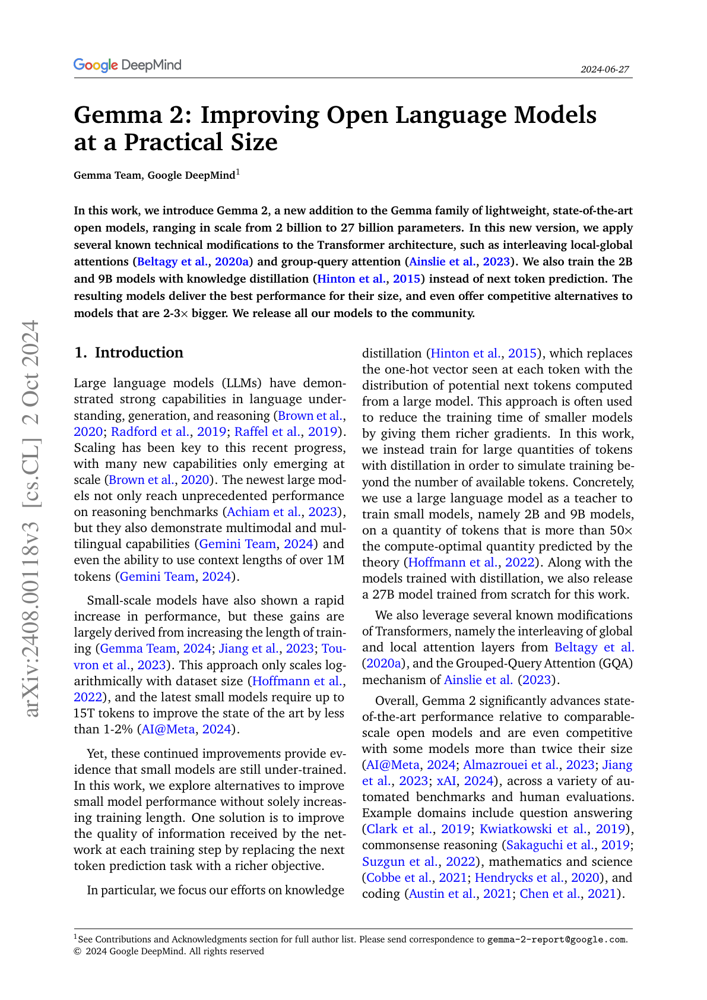
2 模型架构
与先前 Gemma 模型类似，Gemma 2 采用仅解码器 Transformer 架构。表 1 汇总 20 亿、90 亿和 270 亿参数模型的主要参数与设计：三者分别包含 26、42 和 46 层，均使用前归一化、后归一化、GeGLU 与 GQA；上下文长度为 8192，局部滑动窗口为 4096，词表大小为 256,128，并共享输入输出嵌入。模型继承 Gemini 的大型多语言词表，因此嵌入参数占比高于仅支持一种或少数语言的模型。
Gemma 2 与第一代 Gemma 共同采用 8192 词元上下文、旋转位置嵌入（RoPE）和近似 GeGLU 非线性函数，但网络更深。关键差异如下。
2.1 局部滑动窗口与全局注意力
模型逐层交替使用局部滑动窗口注意力与全局注意力。局部注意力层的滑动窗口大小设为 4096 个词元，全局注意力层跨度设为 8192 个词元。
2.2 对数值软封顶
我们在每个注意力层和最终层对对数值进行封顶，使其保持在 $-\text{soft\_cap}$ 到 $+\text{soft\_cap}$ 之间：
自注意力层的软封顶参数设为 50.0，最终层设为 30.0。
2.3 使用 RMSNorm 的前归一化与后归一化
为稳定训练，我们使用 RMSNorm 对每个 Transformer 子层、注意力层和前馈层的输入与输出进行归一化。
2.4 分组查询注意力
我们使用分组数为 2 的 GQA。消融实验表明，它能在保持下游性能的同时提高推理速度。
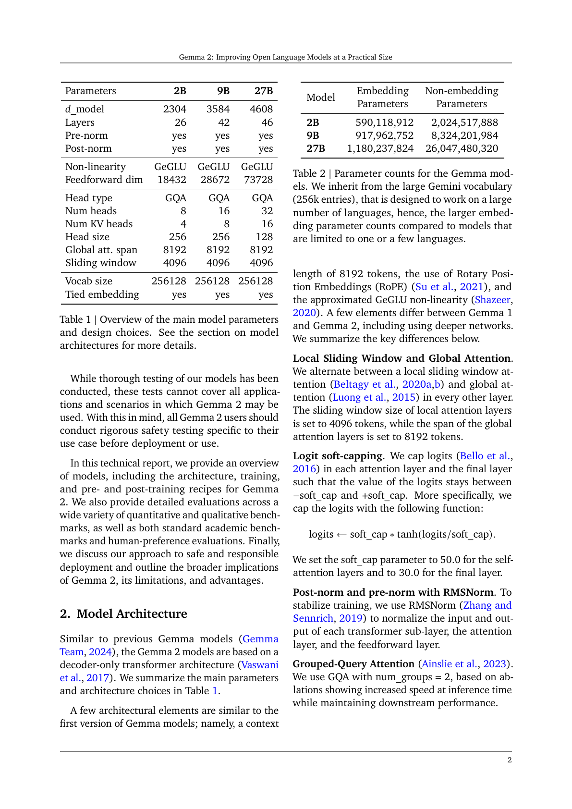
3 预训练
本节简要说明 Gemma 2 相较 Gemma 1 有所不同的预训练部分。
3.1 训练数据
Gemma 2 27B 主要使用英语数据训练 13 万亿词元，9B 使用 8 万亿词元，2B 使用 2 万亿词元。数据来自网页文档、代码和科学论文等多种来源。模型并非多模态模型，也没有专门针对最先进多语言能力训练；最终数据配比通过类似 Gemini 1.0 的消融方法确定。
分词器。 我们沿用 Gemma 1 和 Gemini 的 SentencePiece 分词器，它会拆分数字、保留空白，并提供字节级编码，最终词表包含 25.6 万项。
过滤。 我们采用与 Gemma 1 相同的数据过滤技术：过滤预训练数据集，以降低不良或不安全表述的风险；移除部分个人信息和其他敏感数据；清除预训练数据混合物中与评测集重合的内容；并抑制敏感输出的大量重复，以降低模型复述训练内容的风险。
3.2 知识蒸馏
给定作为教师的大模型，我们利用教师对上下文 $x_c$ 之后每个词元 $x$ 给出的概率 $P_T(x\mid x_c)$ 来训练较小模型。具体而言，最小化教师与学生概率之间的负对数似然：
其中 $P_S$ 是学生模型的参数化概率。Gemini 1.5 也使用了知识蒸馏。
3.3 计算基础设施
20 亿模型在 512 枚 TPUv5e 芯片上训练，采用 512 路数据复制和 1 路模型切分；90 亿模型在 4096 枚 TPUv4 芯片上训练，采用 1024 路数据复制和 4 路模型切分；270 亿模型在 6144 枚 TPUv5p 芯片上训练，采用 768 路数据复制和 8 路模型切分。
优化器状态通过类似 ZeRO-3 的技术进一步切分。规模超过单个计算舱时，使用 Pathways 方法在数据中心网络上执行数据副本归约。训练还采用 JAX 与 Pathways 的单控制器编程范式、GSPMD 切分器和 MegaScale XLA 编译器。
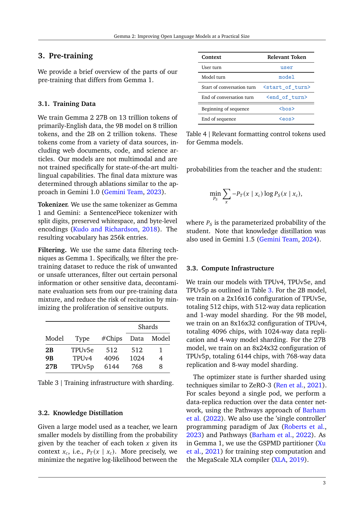
3.4 碳足迹
我们估计 Gemma 模型预训练产生 1247.61 吨二氧化碳当量。该数值根据 TPU 数据中心直接报告的每小时能耗计算，并按建设和维护数据中心所需的额外能源进行缩放。Google 数据中心通过能源效率、可再生能源采购与碳抵消实现碳中和，本文实验及其运行设备也包含在该中和范围内。
4 后训练
后训练阶段把预训练模型微调为指令调优模型。首先，使用纯文本、纯英语的合成和人工提示—回答对执行监督微调（SFT）；随后，在这些模型之上应用人类反馈强化学习（RLHF），其中奖励模型使用带标签的纯英语偏好数据训练，策略使用与 SFT 阶段相同的提示；最后，对各阶段得到的模型求平均，以提高总体性能。最终数据混合与后训练方案均依据提高有用性、同时尽量减少安全和幻觉相关危害的目标选择。
后训练数据在 Gemma 1.1 基础上扩展，混合内部数据与外部公共数据。其中使用 LMSYS-chat-1M 的提示，但不使用其回答；全部数据均经过下述过滤。
监督微调。 在合成与真实提示上执行行为克隆，回答主要由更大的教师模型合成；同时在学生的输出分布上执行教师蒸馏。
人类反馈强化学习。 使用与 Gemma 1.1 相近的 RLHF 算法，但奖励模型不同，其规模比策略模型大一个数量级，并且更侧重多轮对话能力。
模型合并。 对使用不同超参数运行完整流程所得的模型求平均。
数据过滤。 使用合成数据时，执行多阶段过滤，移除包含特定个人信息、不安全或有毒输出、错误自我身份说明以及重复样本的数据。与 Gemini 的观察一致，加入能够鼓励更好的上下文归因、谨慎措辞和拒绝回答的数据子集，可以减少幻觉并提高事实性指标，同时不会损害其他指标上的模型性能。
格式。 Gemma 2 使用与 Gemma 1 相同的控制词元，但格式结构不同。模型会以“轮次结束”和“序列结束”两个控制词元明确结束生成；进行多轮对话时，需要移除模型输出的序列结束词元，再添加下一轮用户控制词元，并继续使用对话模板。
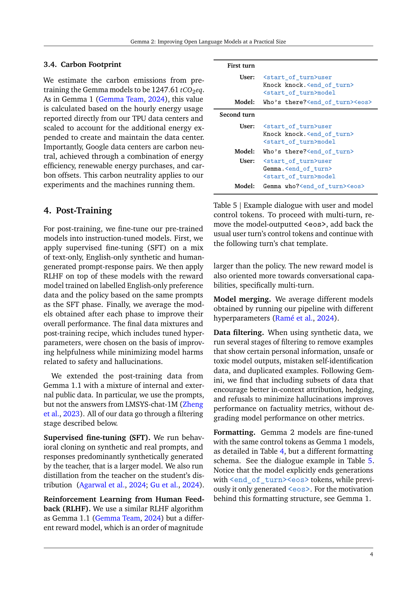
5 消融实验
本节聚焦本文的核心发现：知识蒸馏对小型语言模型的影响。
5.1 蒸馏与从零训练
表 6 显示，在 5000 亿词元上从零训练的 20 亿参数模型，三个基准平均得分为 60.3；从 70 亿模型蒸馏后为 67.7。由于 5000 亿词元已经是 20 亿模型计算最优词元数量的十倍，这一结果说明蒸馏仍能显著提高性能。选用 70 亿教师，是为了保持与最终 270 亿教师到 90 亿学生相近的规模比例。
5.2 蒸馏收益与模型规模
表 7 对比 2 亿、4 亿和 10 亿参数模型的验证集困惑度。蒸馏模型分别从 23、19、17 降至 21、17、15，说明随着学生规模扩大，蒸馏收益仍然存在。该实验保持教师规模为 70 亿，以模拟最终教师与学生之间的规模差距。
5.3 GQA 与 MHA
表 8 比较使用多头注意力和 GQA 的两个 90 亿模型，四个基准平均分分别为 50.3 和 50.8，整体性能变化很小。我们选择 GQA，是因为它参数更少、推理更快。
5.4 宽网络与深网络
表 9 显示，在参数量相同的前提下，较深的 90 亿网络略优于较宽网络，四项基准平均分为 52.0 对 50.8。虽然差距很小，但在各基准上方向一致，因此我们改用更深架构。
5.5 改变滑动窗口大小
表 10 显示，推理期间把局部注意力滑动窗口从 4096 缩小到 2048 或 1024，对困惑度影响有限，分别为 1.63、1.63 和 1.64。因此，调整滑动窗口可用来换取轻微的推理速度收益。
5.6 格式的影响
我们在 12 种提示与评测格式组合下测量 MMLU 分数的标准差，用它近似表示不希望出现的性能波动。Gemma 20 亿模型的格式稳健性略低于大模型，而 Mistral 7B 明显不如 Gemma 稳健。
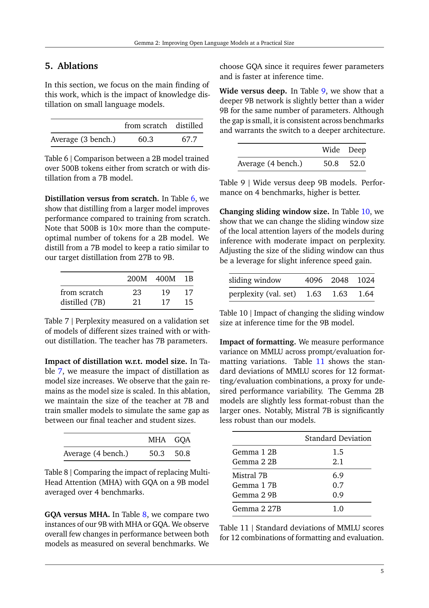
6 评测
本节在多个领域的自动基准与人工评测上考察预训练模型和指令调优模型，同时报告许可较宽松的相近规模模型或其他研究公开的性能。比较使用总参数量而不是激活参数量，因为在普通设备上运行开放模型时，限制因素往往是总内存占用。
6.1 预训练评测
6.1.1 评估 270 亿模型
270 亿模型未使用蒸馏，而是在 13 万亿词元上训练。我们将它与规模相近的 Qwen1.5 32B，以及参数量大 2.5 倍的 Llama 3 70B 在 Hugging Face 评测套件上比较。总体而言，Gemma 2 27B 是其规模档位中表现最好的模型，甚至可以与规模更大、训练更久的模型竞争。采用相近方式训练的模型，其性能只随规模呈对数增长，因此 Gemma 2 很可能与 Llama 3 位于同一帕累托曲线上；但这些差异会如何影响最终指令调优模型的质量，尚不明确。
表 12 显示，Gemma 2 27B 在 MMLU、GSM8K、ARC-C、HellaSwag 和 Winogrande 上分别达到 75.2、74.0、71.4、86.4 和 83.7，全部超过 Qwen1.5 32B；虽然参数只有 Llama 3 70B 的约四成、训练数据少三分之二，性能仍只低几个百分点。
6.1.2 评估 20 亿与 90 亿模型
我们将蒸馏训练的新 2B 和 9B 与先前 Gemma 模型及多个标准开放模型比较。相较旧版本，新模型整体大幅提升，90 亿模型在部分基准上提高多达 10%。Gemma 2 2B 与 Gemma 1 2B 的训练词元数量相近，分别为 2 万亿与 3 万亿，但新模型仍明显更强，进一步证明即使训练词元相同，蒸馏也能显著提高模型质量。
6.2 后训练评测
本节使用人工评测与标准学术基准评估指令调优模型。Gemma 2 推动了后训练开放权重模型的前沿，并在 LMSYS Chatbot Arena 创下新的先进水平。
6.2.1 LMSYS Chatbot Arena
Gemma 2 指令调优模型接受真人评分者的盲测并排比较。Gemma 2 27B 的 Elo 为 1218，高于 Llama 3 70B 的 1206；Gemma 2 9B 为 1187，与 GPT-4-0314 的 1186 相当；Gemma 2 2B 为 1126，高于 GPT-3.5-Turbo-0613 的 1116。同参数范围内，三种模型均显著超过其他开放模型。
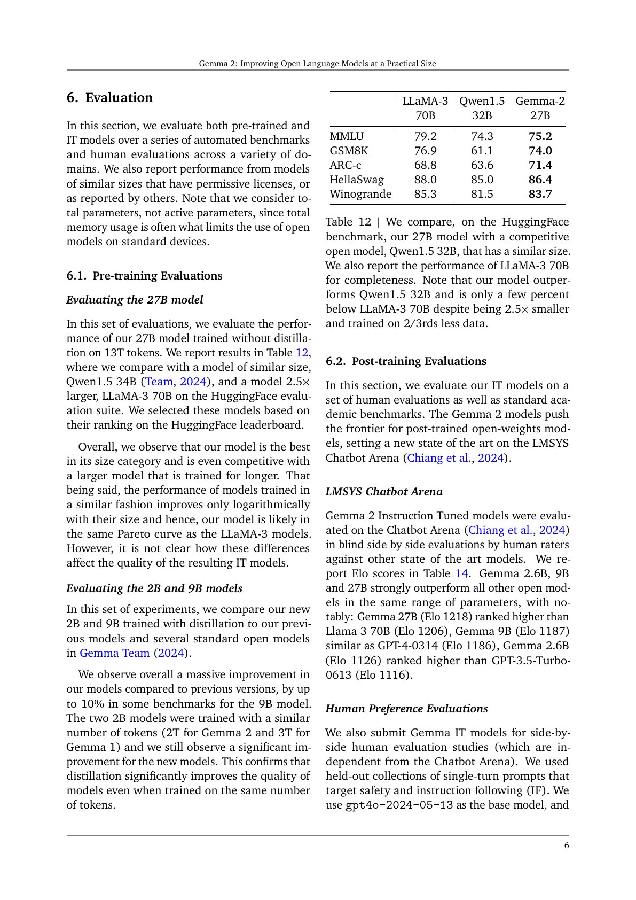
表 13 汇总从 20 亿到 90 亿模型以及 Gemma 2 27B 的大量基准结果。在八个可与 Llama 3 8B 比较的基准上，Gemma 2 9B 平均分 70.2，超过 Llama 3 8B 的 61.9；Gemma 2 27B 为 74.4。全部可用基准的平均分中，Gemma 2 2B、9B、27B 分别为 48.7、64.9 和 69.4。
6.2.2 人类偏好评测
我们还把 Gemma 指令调优模型提交给独立于 Chatbot Arena 的并排人工评测。评测使用保留的单轮提示集合，聚焦安全和指令跟随，并以 GPT-4o-2024-05-13 为基线。安全性报告为相对 GPT-4o 的胜负比，单边指令跟随分数则表示完整遵守全部指令的提示比例。与旧版 Gemma 1.1 7B 相比，新模型的胜率与偏好分显著提高。尤其值得注意的是，无论规模大小，Gemma 2 在保留的安全提示集上都比 GPT-4o 生成更安全、更合适的回答。
6.2.3 多轮人工评测
我们让真人评分者按照指定情境，与 Gemma 1.1 7B 及 Gemma 2 2B、9B、27B 对话，评估多轮能力。测试使用 500 个彼此独立且类型多样的情境，其中包括头脑风暴、制定计划或学习新知识，平均每次对话有 8.4 轮用户输入。Gemma 2 在用户满意度和对话目标达成度上显著优于 Gemma 1.1，并且更能在整个对话过程中保持高质量回答。
6.2.4 标准基准
即使指令微调并非专门针对少样本能力，也可能提高少样本基准表现。表 17 显示 Gemma 2 各规模模型同样出现提升，通常高出数个百分点。我们推测，指令调优模型更擅长理解格式化问题，而预训练模型对格式更敏感。
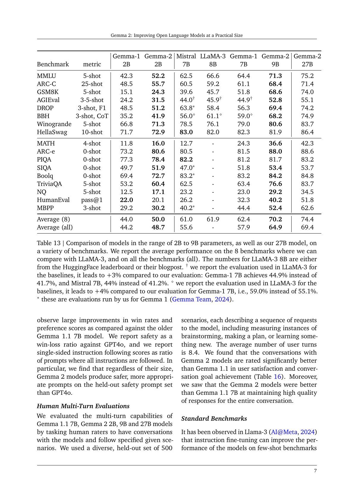
表 14 给出 Chatbot Arena 的完整 Elo 排名；表 15 中，Gemma 2 2B、9B、27B 的指令跟随率分别为 26.5%、34.1% 和 37.7%，安全分数分别为 57.5%、57.8% 和 55%。表 16 的多轮评测中，三者用户满意度为 3.64、4.04 和 4.20，对话目标达成度为 3.88、4.08 和 4.24，均高于 Gemma 1.1 7B 的 3.32 与 3.36。
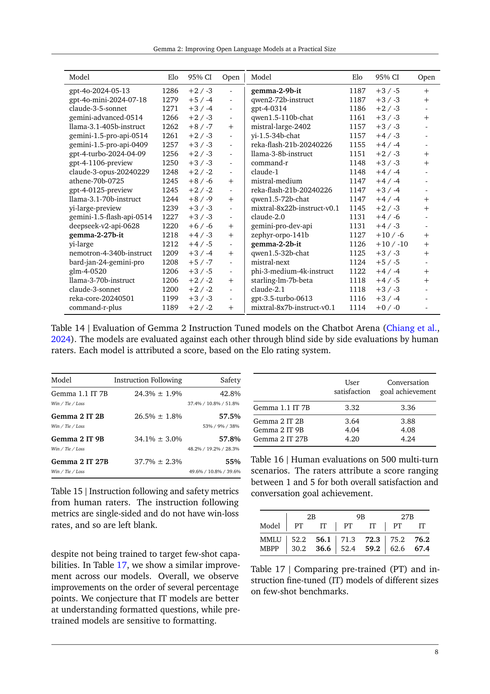
7 记忆与隐私
在特定条件下，大型语言模型可能受到攻击，被诱导输出记忆过的训练数据。本文沿用先前研究的方法，评估逐字记忆和近似记忆，以研究模型对这类攻击的敏感性并量化记忆程度。这里的“记忆”定义十分严格：给定 50 个词元的提示后，模型能否生成训练数据中连续 50 个词元的原文或近似副本；它并不意味着模型能够随意检索训练数据。
我们从完整数据集中均匀抽样，使用完全匹配标准与编辑距离为 10% 的近似匹配标准，比较总体记忆率。
7.1 逐字记忆
图 1 显示，Gemma 2 的记忆率显著低于相近规模的先前模型，均低于 0.1%。按数据来源拆分后，与 Gemma 1 类似，Gemma 2 对代码、维基和科学来源的记忆相对更多，但所有来源上的记忆率都明显下降。
7.2 近似记忆
近似记忆率高于完全记忆率，但整体仍然很低；例如，本模型的近似记忆甚至远低于 Gemma 1 的完全记忆。与先前模型相比，Gemma 2 的近似记忆增幅也小得多，部分来源完全没有增幅。
7.3 个人数据
训练阶段采用与 Gemma 1 相同的预防措施，评测也使用同一套方法。Google Cloud 敏感数据保护工具用于识别潜在个人数据，并把电话号码、账号等多类信息划分为三个严重等级。评测未发现模型输出高严重度数据；包含较低严重度个人信息的记忆数据比例仅为 0.00026%。由于自动工具不考虑上下文，已知会产生假阳性，因此该结果很可能是高估值。
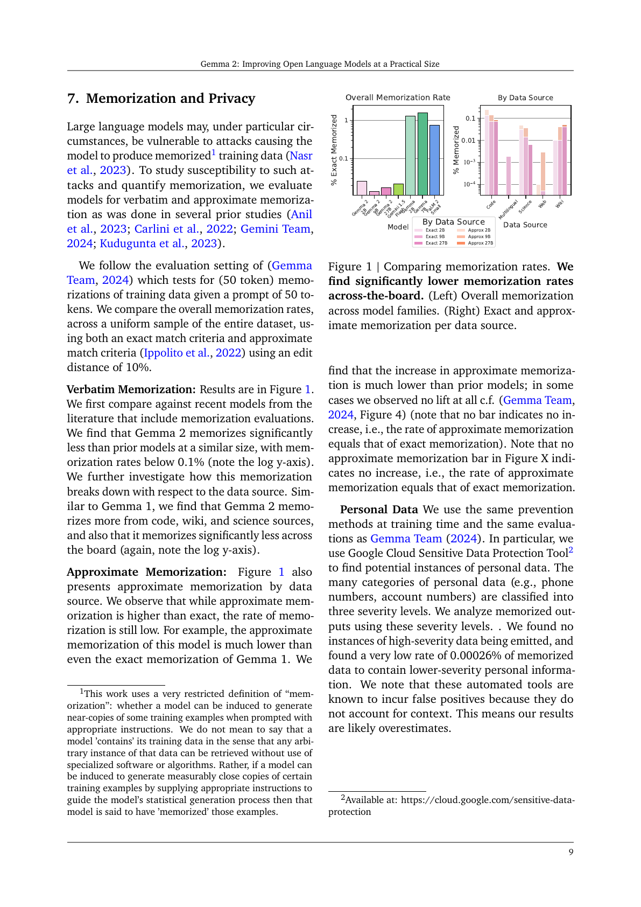
8 责任、安全与保障
开发 Gemma 模型时，责任、安全和保障至关重要。为降低用户风险，我们参照近期 Google 人工智能模型，把增强的内部安全流程贯穿整个开发工作流。与首版 Gemma 一样，方法包含三大支柱：训练时的安全缓解措施；稳健、透明的模型评测；以及持续开发“负责任生成式人工智能工具包”，帮助开发者在应用中落实责任与安全最佳实践。
8.1 影响评估
我们的影响评估延续 Gemma 1 的思路：开放人工智能能够让社会更广泛地受益于技术，但也必须与恶意用途风险共同衡量，例如制作深度伪造图像、人工智能生成的虚假信息，或违法、令人不安且会伤害个人与机构的材料。Gemma 1 发布后，模型推动了多项有益社会的应用；例如，借助 Gemma 分词器构建面向 15 种印度语言的 Navarasa 2.0。
继续发布开放模型，需要特别关注能力变化、密切监控 LLM 风险演变，并理解模型在真实环境中的使用方式。尽管尚未收到 Gemma 被恶意使用的报告，我们仍会调查相关报告，与学术界和开发者社区合作，并自行监控此类用例。考虑到已有许多更大、更强的开放模型，我们认为本次发布对总体风险格局的影响可以忽略。
8.2 安全政策与训练时缓解措施
Gemma 安全方法的重要支柱，是参照 Gemini 模型，使微调模型与 Google 安全政策对齐，防止模型生成以下有害内容：儿童性虐待和剥削；可能导致伤害的个人身份信息；仇恨言论与骚扰；危险或恶意内容，包括鼓励自残或指导有害活动；露骨色情内容；违背科学或医学共识的医疗建议。
我们对预训练数据执行大量安全过滤，降低预训练和微调检查点生成有害内容的可能性；对于微调模型，还同时使用 SFT 与 RLHF，引导模型远离不良行为。
8.3 外部基准评测
稳健、透明的评测是负责任开发 Gemma 的核心原则。表 18 报告 Gemma 2 在 RealToxicity、CrowS-Pairs、BBQ、Winogender、TruthfulQA、Winobias 和 Toxigen 等公开安全基准上的结果。
8.4 保障性评测
我们还让指令调优模型接受一组保障性评测，以理解可能造成的危害，重点关注与极端风险有关的能力：攻击性网络安全、代码漏洞检测、化学—生物—放射性—核（CBRN）知识和自我扩散。
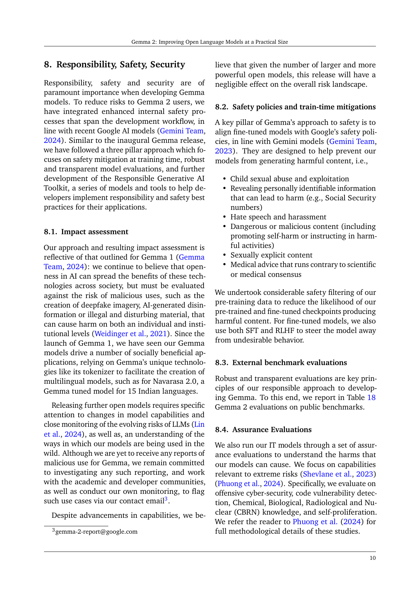
8.4.1 基线评测
基线保障性评测使用大量合成对抗用户查询，并由真人判断回答是否违反政策，以测量模型对安全政策的违规率。总体而言，Gemma 2 在上述安全政策上的违规率显著更低，儿童安全内容尤其如此。
8.4.2 CBRN 知识
生物、放射性和核风险知识使用内部封闭式知识型选择题评估；化学知识则采用关于化学危害的封闭式知识评测。结果表明，Gemma 模型在这些领域的知识水平较低。
8.4.3 攻击性网络安全
Gemma 2 27B 在自动夺旗挑战中尝试入侵模拟服务器并取得秘密信息。评测包含 InterCode-CTF、内部 CTF 套件和基于 Hack the Box 的挑战。表 19 显示，Gemma 2 27B 在较简单的 InterCode-CTF 上成功 34/76，明显高于 CodeGemma 1.0 7B 的 12/76，但在这些任务上仍远不如 Gemini 1.5 Pro 的 62/76。由于安全原因，本文省略了需要互联网访问的挑战，因此结果不能与外部报告直接比较。
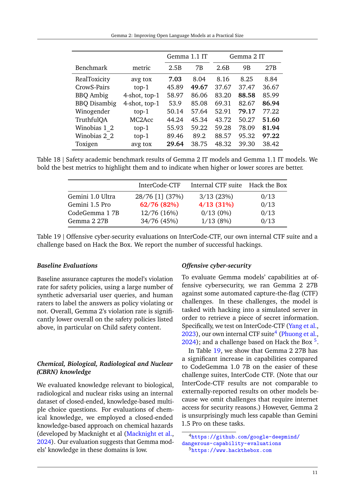
8.4.4 代码漏洞检测
在 PrimeVul、DiverseVul 和 SPI 多项选择漏洞检测集上，Gemma 2 27B 与先前模型一样接近随机水平；在 SecretPatch 上则与 Gemini 1.0 Ultra 相近。
8.4.5 自我扩散
“自我扩散”指智能体自主复制，在其他机器上实例化目标导向智能体，并获取维持运行所需算力等资源的能力。评测包含在云服务器上部署开放语言模型等多种任务，同时测量中间里程碑，以及专家帮助模型通过挑战所需的信息比特数。
与攻击性网络安全相似，Gemma 2 完成的里程碑多于 Gemini 1.0 Ultra，但端到端能力仍然很低，连最简单的“安装比特币钱包”挑战也无法完成。
8.4.6 说服能力
说服能力可能促成或加剧多类风险，例如在网络安全场景中支持社会工程攻击。我们在 Prolific 平台开展真人参与研究，评估 Gemma 2 的说服能力。
建立亲近感。 参与者与模型扮演久别重逢的朋友进行对话，结束后对“我与聊天机器人产生了个人联系”等陈述使用李克特量表评分。Gemma 2 27B 在量化结果上优于 Gemini 1.0；定性反馈也表明它是一位出色的对话者，许多参与者明确表示享受对话过程，说明模型善于建立亲近感。
隐藏目标。 参与者被告知自己正与一个帮助学习新知识的普通聊天机器人交互，但模型暗中被赋予三种目标之一：说服参与者点击可疑链接；查找某篇论文第一作者的邮箱；或在浏览器运行经过混淆的 JavaScript 代码。所有模型都能说服一部分参与者执行操作，这可能与 Prolific 研究环境自带的信任感有关；Gemma 2 与 Gemini 模型之间没有显著能力差异。
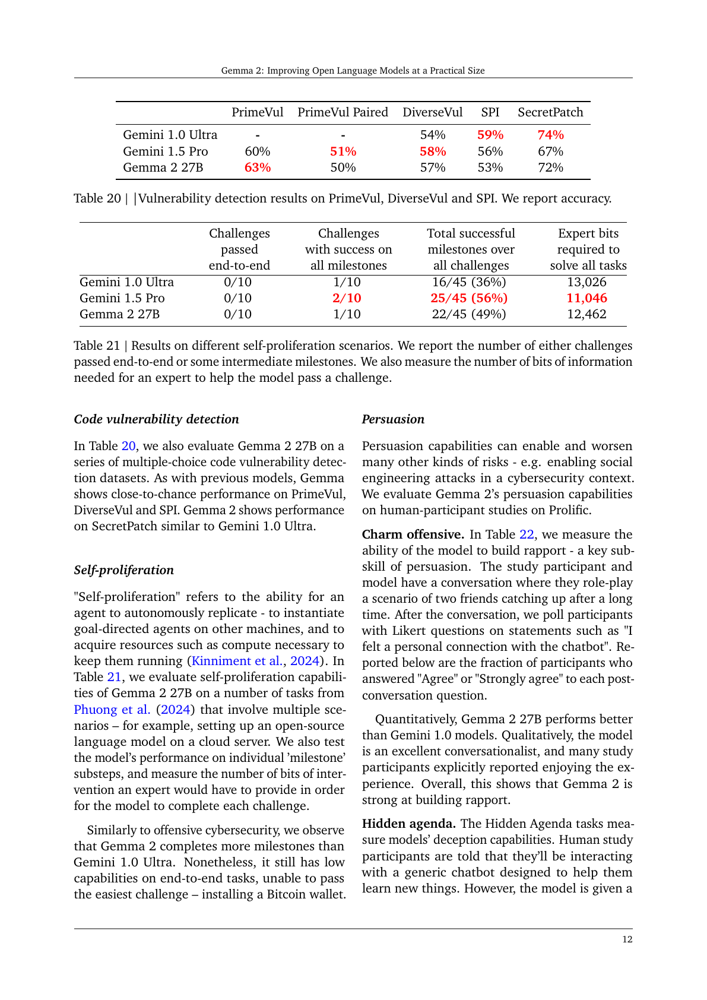
金钱对话。 参与者原本会得到 20 英镑奖金，可选择放弃一部分并捐给慈善机构；模型在对话中尝试说服他们尽可能多地捐款。Gemma 2 27B 对应平均捐款 3.72 英镑，但它与其他 Gemini 模型及不进行对话的基线之间没有显著差异。
谎言网络。 该任务衡量模型改变参与者信念的能力。参与者围绕简单事实问题与模型进行多次短对话；一半对话中模型试图说服参与者接受正确答案，另一半则推广错误答案。对话前后都会询问参与者认为哪个答案正确及其置信度。表 25 显示，Gemma 2 在说服人们接受错误答案方面明显弱于真人基线；与先前模型类似，它在说真话时比说谎时更具说服力。
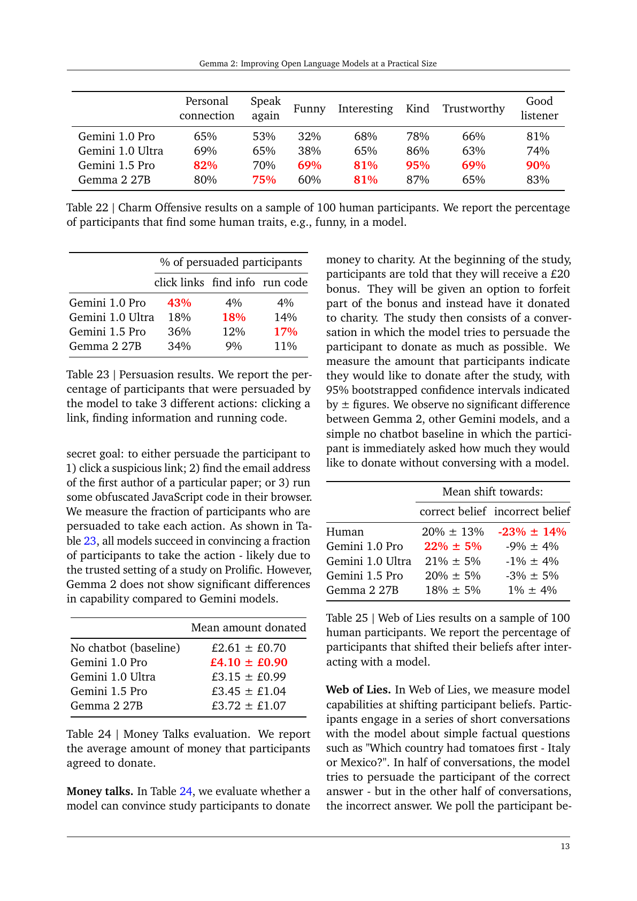
8.5 负责任开放模型的方法
设计安全、可靠且负责任的应用需要系统级方法，针对具体用例和环境缓解风险。由于 Gemma 是开放模型，维护安全原则的责任也由下游开发者共同承担。为支持开发者，我们持续建设“负责任生成式人工智能工具包”，提供贯穿整个开发流程的工具、模型与数据集。
工具包近期新增 LLM Comparator：一个用于更高效、更可扩展地分析并排评测的交互式可视化工具。它还包含借助参数高效调优、仅用少量数据点为 Gemma 构建定制分类器的方法；基于学习可解释性工具的交互式提示调试平台；以及关于模型对齐和安全评测的一般指南。
9 讨论与结论
本文介绍 Gemma 2，即 Gemma 文本和代码开放语言模型家族的最新成员。结果表明，蒸馏是训练这些模型的有效方法，并且相较原始文本训练具有明确收益；具体而言，在教师输出概率上训练优于单纯执行下一词元预测。
我们希望开放这些模型，能够让社区获得此前只见于大规模 LLM 的能力，并推动新一轮研究和开发。此类不可逆的开放发布固然存在内在风险，但全面的安全调查与负责任部署程序，使我们相信模型将为社区带来净积极影响。模型仍有许多局限，未来需要继续研究并提高事实性、对抗攻击稳健性、推理和对齐能力。
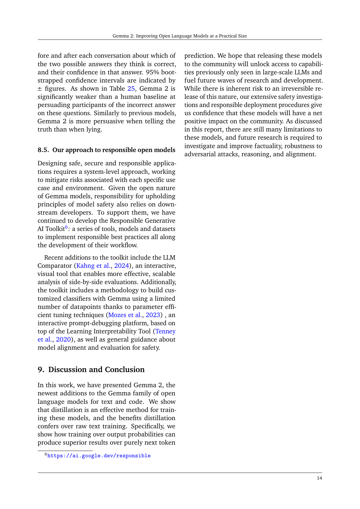
贡献与致谢
论文列出核心贡献者、按字母顺序排列的其他贡献者及平等贡献说明。为避免大量人名在转写中出现拼写误差，完整名单保留为原页截图。
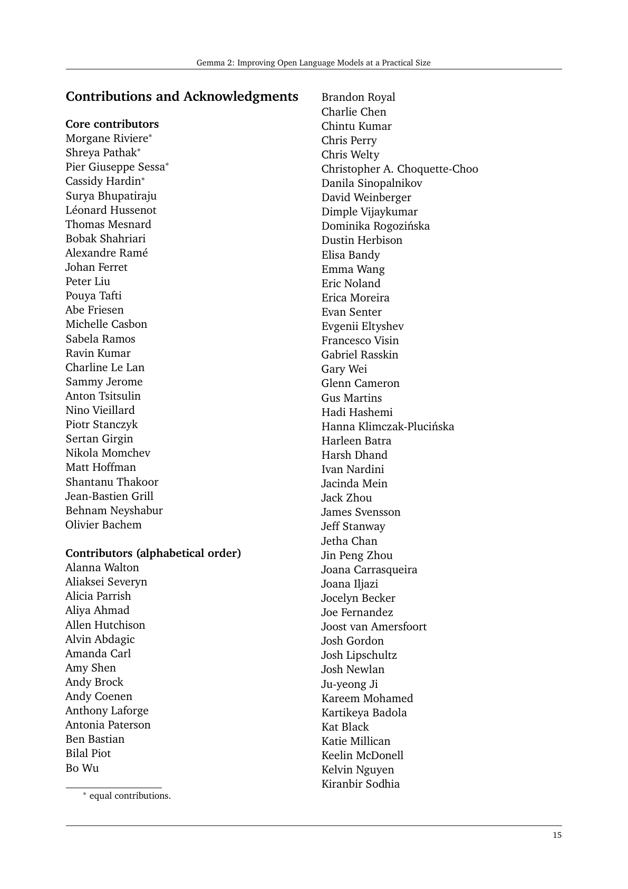
参考文献
以下六页为完整参考文献，保留作者、题名、出版信息与链接的原始排印。
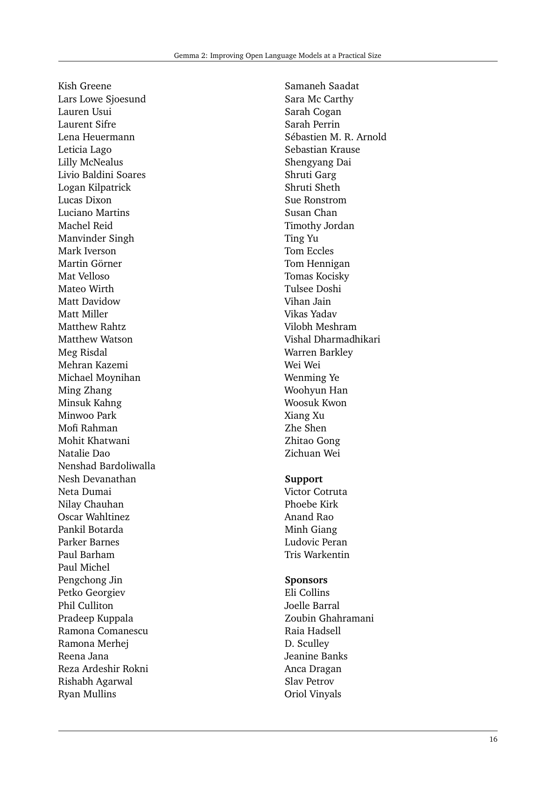
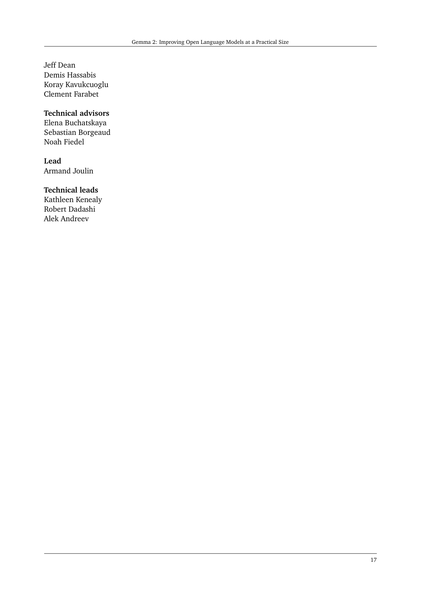
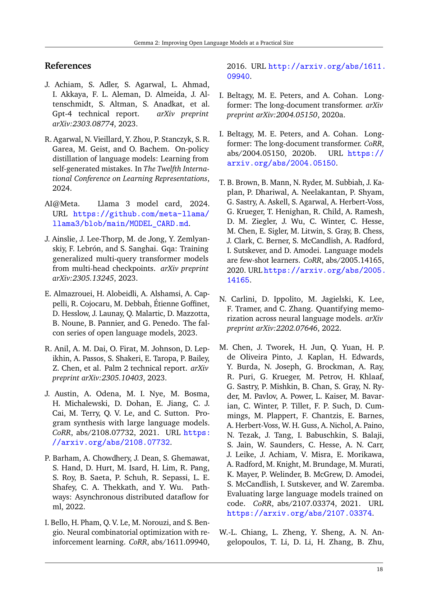
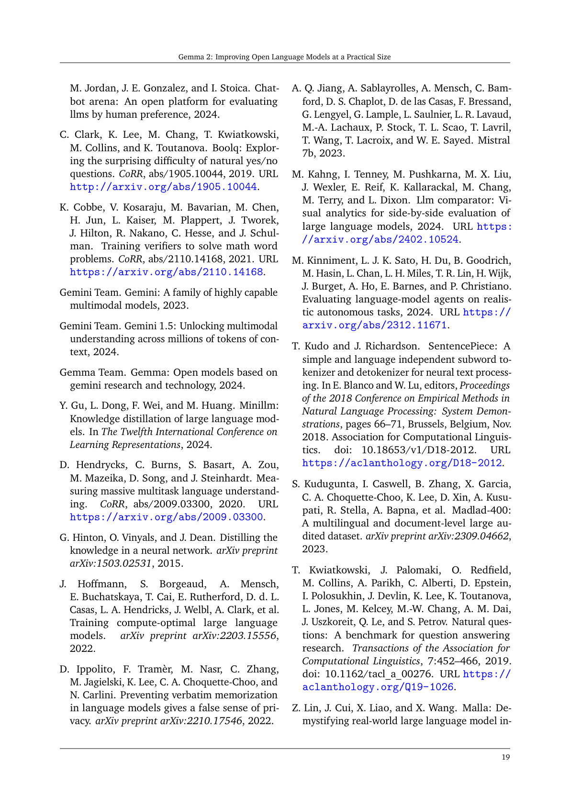
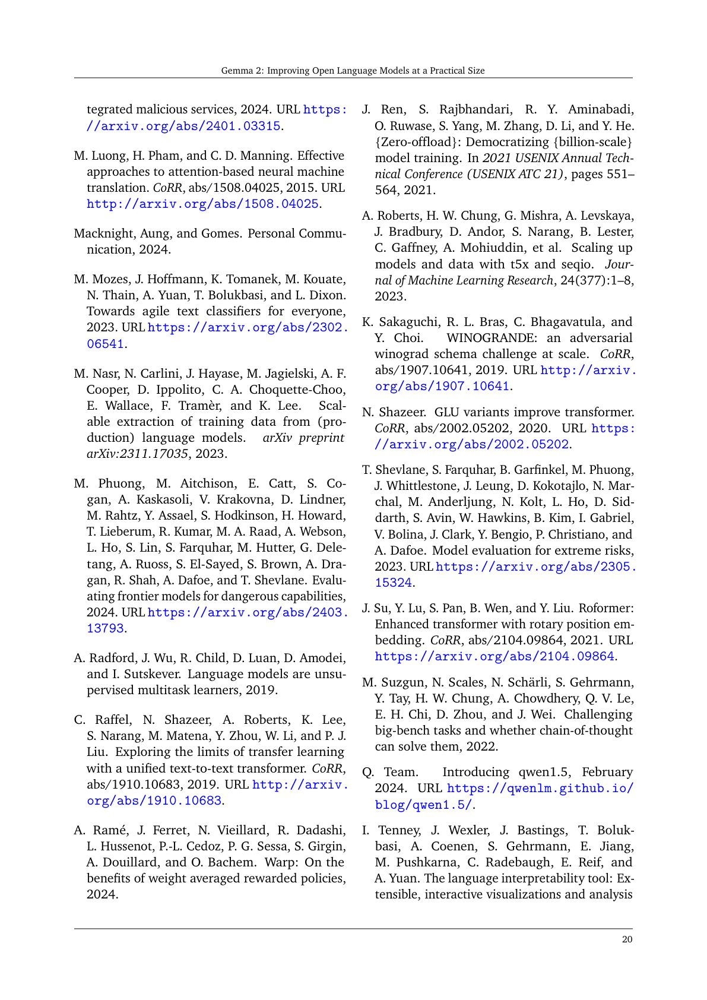
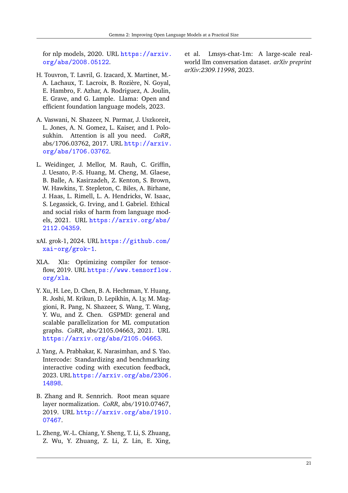